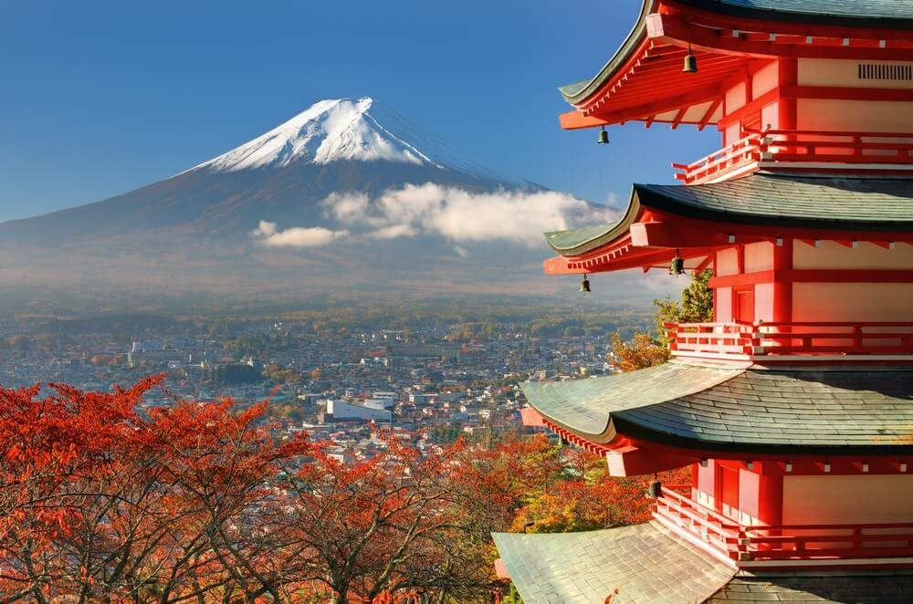

About Mount Fiji
Mount Fiji, Japan's highest and most iconic mountain, is a symbol of natural beauty and cultural significance. Its perfectly symmetrical cone shape has inspired artists and poets for centuries.
Visitors to Mount Fiji can enjoy breathtaking views from various vantage points, such as the Chureito Pagoda and the shores of Lake Kawaguchi. The mountain holds spiritual importance and is a UNESCO World Heritage Site.